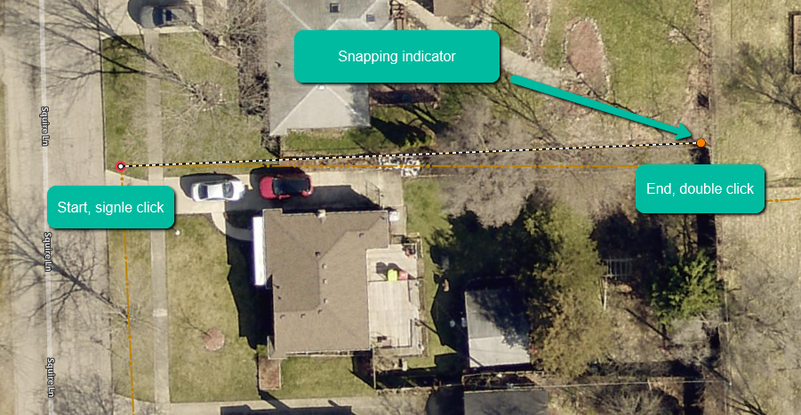
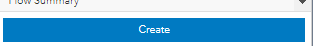
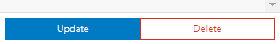

How-To Guide on Feature Editing
- Select the "Editor" button on the top menu bar

- Select desired layer you want to add linework to

- Enable Snapping
- You will want to snap lines to points when creating new features
- Select "Settings"
- Select "Snapping Layers"
- Select the "Layer/Group"
- Select the desired Layer you want to snap to

- Hover over point until red circle appears
- Click the start point, should be point feature
- Hover over end point until red circle appears
- Double Click to finish adding feature

- Fill out any relevant attribute information and select "Create"

- Select "Select" undert the Edit Features section

- Select desired feature you want to update
- Select "Update" when you are finished and want to save your changes
